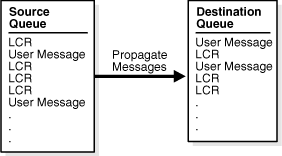
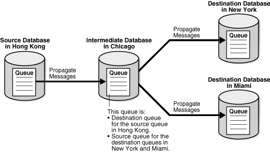

3 Oracle Streams Staging and Propagation
The following topics contain conceptual information about staging messages in queues and propagating messages from one queue to another:
3.1 Introduction to Message Staging and Propagation
Oracle Streams uses queues to stage messages. Staged messages can be consumed or propagated, or both. Staged messages can be consumed by an apply process, a messaging client, or a user application. A running apply process implicitly dequeues messages, but messaging clients and user applications explicitly dequeue messages. Even after a message is consumed, it can remain in the queue if you also have configured an Oracle Streams propagation to propagate, or send, the message to one or more other queues or if message retention is specified for the queue. Message retention applies to messages captured by a synchronous capture or enqueued explicitly, but it does not apply to messages captured by a capture process.
3.2 Queues
A queue is an abstract storage unit used by a messaging system to store messages. This section includes the following topics:
See Also:
3.2.1 ANYDATA Queues and Typed Queues
A queue of ANYDATA type can stage messages of almost any type and is called an ANYDATA queue. A typed queue can stage messages of a specific type. Oracle Streams clients always use ANYDATA queues.
In an Oracle Streams replication environment, logical change records (LCRs) must be staged in ANYDATA queues. In an Oracle Streams messaging environment, both ANYDATA queues and typed queues can stage messages. Publishing applications can enqueue messages into a single queue, and subscribing applications can dequeue these messages.
Two types of messages can be encapsulated into an ANYDATA object and staged in an ANYDATA queue: LCRs and user messages. An LCR is an object that contains information about a change to a database object. A user message is a message of a user-defined type created by users or applications. Both types of messages can be used for information sharing within a single database or between databases.
ANYDATA queues can stage user messages whose payloads are of ANYDATA type. An ANYDATA payload can be a wrapper for payloads of different data types.
By using ANYDATA wrappers for message payloads, publishing applications can enqueue messages of different types into a single queue, and subscribing applications can dequeue these messages, either explicitly using a messaging client or an application, or implicitly using an apply process. If the subscribing application is remote, then the messages can be propagated to the remote site, and the subscribing application can dequeue the messages from a local queue in the remote database. Alternatively, a remote subscribing application can dequeue messages directly from the source queue using a variety of standard protocols, such as PL/SQL and OCI.
You can wrap almost any type of payload in an ANYDATA payload. To do this, you use the Convertdata_type static functions of the ANYDATA type, where data_type is the type of object to wrap. These functions take the object as input and return an ANYDATA object.
Oracle Streams includes the features of Oracle Database Advanced Queuing (AQ), which supports all the standard features of message queuing systems, including multiconsumer queues, publish and subscribe, content-based routing, internet propagation, transformations, and gateways to other messaging subsystems.
See Also:
-
Oracle Database Advanced Queuing User's Guide for more information relating to
ANYDATAqueues, such as wrapping payloads in anANYDATAwrapper, programmatic environments for enqueuing messages into and dequeuing messages from anANYDATAqueue, propagation, and user-defined types -
Oracle Database PL/SQL Packages and Types Reference for more information about the
ANYDATAtype
3.2.2 Persistent Queues and Buffered Queues
Oracle Streams supports the following message modes:
-
Persistent messaging: Messages are always stored on disk in a database table called a queue table. This type of storage is sometimes called persistent queue storage.
-
Buffered messaging: Messages are stored in memory but can spill to a queue table under certain conditions. This type of storage is sometimes called buffered queue storage. The memory includes Oracle Streams pool memory that is associated with a queue that contains messages that were captured by a capture process or enqueued by applications.
Buffered queues enable Oracle to optimize messages by buffering them in the System Global Area (SGA) instead of always storing them in a queue table. Buffered messaging provides better performance, but it does not support some messaging features, such as message retention. Message retention lets you specify the amount of time a message is retained in the queue table after being dequeued.
If the size of the Oracle Streams pool is not managed automatically, then you should increase the size of the Oracle Streams pool by 10 MB for each buffered queue in a database. Buffered queues improve performance, but some of the information in a buffered queue can be lost if the instance containing the buffered queue shuts down normally or abnormally. Oracle Streams automatically recovers from these cases, assuming full database recovery is performed on the instance.
Messages in a buffered queue can spill from memory into the queue table if they have been staged in the buffered queue for a period of time without being dequeued, or if there is not enough space in memory to hold all of the messages. Messages that spill from memory are stored in the appropriate AQ$_queue_table_name_p table, where queue_table_name is the name of the queue table for the queue. Also, for each spilled message, information is stored in the AQ$_queue_table_name_d table about any propagations and apply processes that are eligible for processing the message.
LCRs that were captured by a capture process are always stored in a buffered queue, but LCRs that were captured by a synchronous capture are always stored in a persistent queue. Other types of messages might or might not be stored in a buffered queue. When an application enqueues a message, the enqueue operation specifies whether the enqueued message is stored in the buffered queue or in the persistent queue. The delivery_mode attribute in the enqueue_options parameter of the DBMS_AQ.ENQUEUE procedure determines whether a message is stored in the buffered queue or the persistent queue. Specifically, if the delivery_mode attribute is the default PERSISTENT, then the message is enqueued into the persistent queue. If it is set to BUFFERED, then the message is enqueued as the buffered queue. When a transaction is moved to the error queue, all messages in the transaction always are stored in a queue table, not in a buffered queue.
Note:
Although buffered and persistent messages can be stored in the same queue, it is sometimes more convenient to think of a queue having a buffered portion and a persistent portion, referred to here as "buffered queue" and "persistent queue." Also, both ANYDATA queues and typed queues can include both a buffered queue and a persistent queue.
See Also:
-
Oracle Streams Replication Administrator's Guide for information about configuring the Oracle Streams pool
-
Oracle Database Advanced Queuing User's Guide for detailed conceptual information about buffered messaging and for information about using buffered messaging
3.2.2.1 Queues and Oracle Streams Clients
Oracle Streams clients always use ANYDATA queues. The following sections discuss how queues interact with Oracle Streams clients:
See Also:
-
Oracle Database Advanced Queuing User's Guide for detailed conceptual information about buffered messaging and for information about using buffered messaging
3.2.2.1.1 Queues and Capture Processes
A capture processes can only enqueue LCRs into a buffered queue. LCRs enqueued into a buffered queue by a capture process can be dequeued only by an apply process. Captured LCRs cannot be dequeued by applications or users.
3.2.2.1.2 Queues and Synchronous Capture
A synchronous capture can only enqueue LCRs into a persistent queue. LCRs captured by synchronous capture can be dequeued by apply processes, messaging clients, applications, and users.
3.2.2.1.3 Queues and Propagations
A propagation propagates any messages in its source queue that satisfy its rule sets. These messages can be stored in a buffered queue or in a persistent queue. A propagation can propagate both types of messages if the messages satisfy the rule sets used by the propagation.
3.2.2.1.4 Queues and Apply Processes
A single apply process can either dequeue messages from a buffered queue or a persistent queue, but not both. Apply processes can dequeue and process captured LCRs in a buffered queue. To dequeue captured LCRs, the apply process must be configured with the apply_captured parameter set to TRUE. Apply processes cannot dequeue buffered LCRs or buffered user messages. To dequeue persistent LCRs or persistent user messages, the apply process must be configured with the apply_captured parameter set to FALSE.
3.2.2.1.5 Queues and Messaging Clients
A messaging clients can only dequeue messages from a persistent queue. In addition, the DBMS_STREAMS_MESSAGING package cannot be used to enqueue messages into or dequeue messages from a buffered queue.
Note:
The DBMS_AQ and DBMS_AQADM packages support buffered messaging.
See Also:
Oracle Database Advanced Queuing User's Guide for more information about using the DBMS_AQ and DBMS_AQADM packages
3.3 Message Propagation Between Queues
You can use Oracle Streams to configure message propagation between two queues. These queues can reside in the same database or in different databases. Oracle Streams uses Oracle Scheduler jobs to propagate messages.
A propagation is always between a source queue and a destination queue. Although propagation is always between two queues, a single queue can participate in many propagations. That is, a single source queue can propagate messages to multiple destination queues, and a single destination queue can receive messages from multiple source queues. Also, a single queue can be a destination queue for some propagations and a source queue for other propagations. However, only one propagation is allowed between a particular source queue and a particular destination queue.
Figure 3-1 shows propagation from a source queue to a destination queue.
Figure 3-1 Propagation from a Source Queue to a Destination Queue
Description of "Figure 3-1 Propagation from a Source Queue to a Destination Queue"
You can create, alter, and drop a propagation, and you can define propagation rules that control which messages are propagated. The user who owns the source queue is the user who propagates messages, and this user must have the necessary privileges to propagate messages. These privileges include the following:
-
EXECUTEprivilege on the rule sets used by the propagation -
EXECUTEprivilege on all custom rule-based transformation functions used in the rule sets -
Enqueue privilege on the destination queue if the destination queue is in the same database
If the propagation propagates messages to a destination queue in a remote database, then the owner of the source queue must be able to use the database link used by the propagation, and the user to which the database link connects at the remote database must have enqueue privilege on the destination queue.
A propagation can propagate all of the messages in a source queue to a destination queue, or a propagation can propagate only a subset of the messages. A single propagation can propagate messages in both the buffered queue portion and persistent queue portion of a queue. Also, a single propagation can propagate LCRs and user messages. You can use rules to control which messages in the source queue are propagated to the destination queue and which messages are discarded.
Depending on how you set up your Oracle Streams environment, changes could be sent back to the site where they originated. You must ensure that your environment is configured to avoid cycling a change in an endless loop. You can use Oracle Streams tags to avoid such a change cycling loop.
The following sections describe propagations in more detail:
See Also:
-
Oracle Database Advanced Queuing User's Guide for detailed information about the propagation infrastructure in Oracle Streams AQ
-
Oracle Streams Replication Administrator's Guide for more information about Oracle Streams tags
3.3.1 Propagation Rules
A propagation either propagates or discards messages based on rules that you define. For LCRs, each rule specifies the database objects and types of changes for which the rule evaluates to TRUE. For user messages, you can create rules to control propagation behavior for specific types of messages. You can place these rules in a positive rule set or a negative rule set used by the propagation.
If a rule evaluates to TRUE for a message, and the rule is in the positive rule set for a propagation, then the propagation propagates the change. If a rule evaluates to TRUE for a message, and the rule is in the negative rule set for a propagation, then the propagation discards the change. If a propagation has both a positive and a negative rule set, then the negative rule set is always evaluated first.
You can specify propagation rules for LCRs at the following levels:
-
A table rule propagates or discards either row changes resulting from DML changes or DDL changes to a particular table. Subset rules are table rules that include a subset of the row changes to a particular table.
-
A schema rule propagates or discards either row changes resulting from DML changes or DDL changes to the database objects in a particular schema.
-
A global rule propagates or discards either all row changes resulting from DML changes or all DDL changes in the source queue.
A queue subscriber that specifies a condition causes the system to generate a rule. The rule sets for all subscribers to a queue are combined into a single system-generated rule set to make subscription more efficient.
3.3.2 Queue-to-Queue Propagations
A propagation can be queue-to-queue or queue-to-database link (queue-to-dblink). A queue-to-queue propagation always has its own exclusive propagation job to propagate messages from the source queue to the destination queue. Because each propagation job has its own propagation schedule, the propagation schedule of each queue-to-queue propagation can be managed separately. Even when multiple queue-to-queue propagations use the same database link, you can enable, disable, or set the propagation schedule for each queue-to-queue propagation separately. Propagation jobs are described in detail later in this chapter.
A single database link can be used by multiple queue-to-queue propagations. The database link must be created with the service name specified as the global name of the database that contains the destination queue.
In contrast, a queue-to-dblink propagation shares a propagation job with other queue-to-dblink propagations from the same source queue that use the same database link. Therefore, these propagations share the same propagation schedule, and any change to the propagation schedule affects all of the queue-to-dblink propagations from the same source queue that use the database link.
3.3.3 Ensured Message Delivery
A captured LCR is propagated successfully to a destination queue when both of the following actions are completed:
-
The message is processed by all relevant apply processes associated with the destination queue.
-
The message is propagated successfully from the source queue to all of its relevant destination queues.
Any other type of message is propagated successfully to a destination queue when the enqueue into the destination queue is committed. Other types of messages include buffered LCRs, buffered user messages, persistent LCRs, and buffered user messages.
When a message is successfully propagated between two queues, the destination queue acknowledges successful propagation of the message. If the source queue is configured to propagate a message to multiple destination queues, then the message remains in the source queue until each destination queue has sent confirmation of message propagation to the source queue. When each destination queue acknowledges successful propagation of the message, and all local consumers in the source queue database have consumed the message, the source queue can drop the message.
This confirmation system ensures that messages are always propagated from the source queue to the destination queue, but, in some configurations, the source queue can become larger than an optimal size. When a source queue increases, it uses more System Global Area (SGA) memory and might use more disk space.
There are two common reasons for a source queue to become larger:
-
If a message cannot be propagated to a specified destination queue for some reason (such as a network problem), then the message remains in the source queue until the destination queue becomes available. This situation could cause the source queue to become large. So, you should monitor your queues regularly to detect problems early.
-
Suppose a source queue is propagating messages captured by a capture process or synchronous capture to multiple destination queues, and one or more destination databases acknowledge successful propagation of messages much more slowly than the other queues. In this case, the source queue can grow because the slower destination databases create a backlog of messages that have already been acknowledged by the faster destination databases. In such an environment, consider creating more than one capture process or synchronous capture to capture changes at the source database. Doing so lets you use one source queue for the slower destination databases and another source queue for the faster destination databases.
3.3.4 Directed Networks
A directed network is one in which propagated messages pass through one or more intermediate databases before arriving at a destination database. A message might or might not be processed by an apply process at an intermediate database. Using Oracle Streams, you can choose which messages are propagated to each destination database, and you can specify the route that messages will traverse on their way to a destination database. Figure 3-2 shows an example of a directed networks environment.
Figure 3-2 Example Directed Networks Environment
Description of "Figure 3-2 Example Directed Networks Environment"
The advantage of using a directed network is that a source database does not need to have a physical network connection with a destination database. So, if you want messages to propagate from one database to another, but there is no direct network connection between the computers running these databases, then you can still propagate the messages without reconfiguring your network, if one or more intermediate databases connect the source database to the destination database.
If you use directed networks, and an intermediate site goes down for an extended period of time or is removed, then you might need to reconfigure the network and the Oracle Streams environment.
3.3.4.1 Queue Forwarding and Apply Forwarding
An intermediate database in a directed network can propagate messages using either queue forwarding or apply forwarding. Queue forwarding means that the messages being forwarded at an intermediate database are the messages received by the intermediate database. The source database for a message is the database where the message originated.
Apply forwarding means that the messages being forwarded at an intermediate database are first processed by an apply process. These messages are then recaptured by a capture process or a synchronous capture at the intermediate database and forwarded. When you use apply forwarding, the intermediate database becomes the new source database for the messages. Either a capture process recaptures the messages from the redo log generated at the intermediate database, or a synchronous capture configured at the intermediate database recaptures the messages.
Consider the following differences between queue forwarding and apply forwarding when you plan your Oracle Streams environment:
-
With queue forwarding, a message is propagated through the directed network without being changed, assuming there are no capture or propagation transformations. With apply forwarding, messages are applied and recaptured at intermediate databases and can be changed by conflict resolution, apply handlers, or apply transformations.
-
With queue forwarding, a destination database must have a separate apply process to apply messages from each source database. With apply forwarding, fewer apply processes might be required at a destination database because recapturing of messages at intermediate databases can result in fewer source databases when changes reach a destination database.
-
With queue forwarding, one or more intermediate databases are in place between a source database and a destination database. With apply forwarding, because messages are recaptured at intermediate databases, the source database for a message can be the same as the intermediate database connected directly with the destination database.
A single Oracle Streams environment can use a combination of queue forwarding and apply forwarding.
3.3.4.1.1 Advantages of Queue Forwarding
Queue forwarding has the following advantages compared with apply forwarding:
-
Performance might be improved because a message is captured only once.
-
Less time might be required to propagate a message from the database where the message originated to the destination database, because the messages are not applied and recaptured at one or more intermediate databases. In other words, latency might be lower with queue forwarding.
-
The origin of a message can be determined easily by running the
GET_SOURCE_DATABASE_NAMEmember procedure on the LCR contained in the message. If you use apply forwarding, then determining the origin of a message requires the use of Oracle Streams tags and apply handlers. -
Parallel apply might scale better and provide more throughput when separate apply processes are used because there are fewer dependencies, and because there are multiple apply coordinators and apply reader processes to perform the work.
-
If one intermediate database goes down, then you can reroute the queues and reset the start SCN at the capture site to reconfigure end-to-end capture, propagation, and apply.
If you use apply forwarding, then substantially more work might be required to reconfigure end-to-end capture, propagation, and apply of messages, because the destination database(s) downstream from the unavailable intermediate database were using the SCN information of this intermediate database. Without this SCN information, the destination databases cannot apply the changes properly.
3.3.4.1.2 Advantages of Apply Forwarding
Apply forwarding has the following advantages compared with queue forwarding:
-
An Oracle Streams environment might be easier to configure because each database can apply changes only from databases directly connected to it, rather than from multiple remote source databases.
-
In a large Oracle Streams environment where intermediate databases apply changes, the environment might be easier to monitor and manage because fewer apply processes might be required. An intermediate database that applies changes must have one apply process for each source database from which it receives changes. In an apply forwarding environment, the source databases of an intermediate database are only the databases to which it is directly connected. In a queue forwarding environment, the source databases of an intermediate database are all of the other source databases in the environment, whether they are directly connected to the intermediate database or not.
See Also:
-
Oracle Streams Extended Examples for an example of an environment that uses queue forwarding
-
Oracle Streams Replication Administrator's Guide for an example of an environment that uses apply forwarding